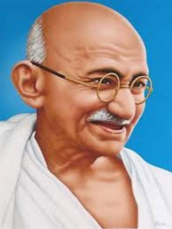

Mahatma Gandhi

Mohandas Karamchand Gandhi was born on 2 October 1869 into a Gujarati Hindu Modh Bania family in Porbandar (also known as Sudamapuri), a coastal town on the Kathiawar Peninsula and then part of the small princely state of Porbandar in the Kathiawar Agency of the British Raj. His father, Karamchand Uttamchand Gandhi (1822–1885), served as the dewan (chief minister) of Porbandar state.His family originated from the then village of Kutiana in what was then Junagadh State.
Although he only had an elementary education and had previously been a clerk in the state administration, Karamchand proved a capable chief minister.
For more information
click here